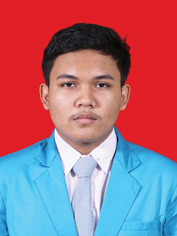

Overview
Hai ! perkenalkan nama saya surya. saya adalah seorang junior web developer.dan seorang cyber security enthusiast. saya sedang belajar menjadi web developer di SMKN 1 DENPASAR. Saya suka menggunakan parrot os sebagai main os dan windwos 10 untuk belajar.
| SKIL | PENGALAMAN |
|---|---|
|
|